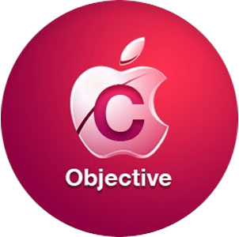

Ваш язык программирования - Objective C!

Компилируемый объектно-ориентированный язык программирования, используемый корпорацией Apple, построенный на основе языка Си и парадигм Smalltalk. В частности, объектная модель построена в стиле Smalltalk — то есть объектам посылаются сообщения.
Язык Objective-C является надмножеством языка Си, поэтому Си-код полностью понятен компилятору Objective-C.
Компилятор Objective-C входит в GCC и доступен на большинстве основных платформ. Язык используется в первую очередь для Mac OS X (Cocoa) и GNUstep — реализаций объектно-ориентированного интерфейса OpenStep. Также язык используется для iOS (Cocoa Touch).